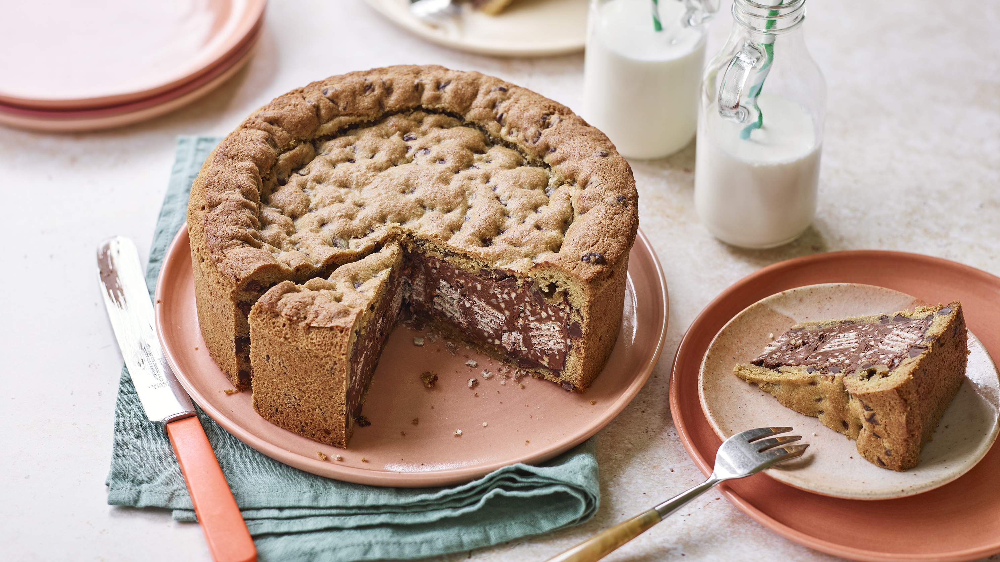

Cookie Pie

The most delightful desert you will ever taste in your poor life!
Ingredients
- 160g of brown sugar
- 100g of refined sugar
- 180g of butter
- 1 egg
- Salt
- 1 spoon of vanilla essence
- 1 tea spoon of baking powder
- 240g of chopped semisweet chocolate
- 270g of wheat flour
- 650g of Nutella
Steps
- Put the butter (don't put it cold!) refined sugar and the brown sugar, stir well until it's homogeneous and the sugar dissolves a little
- Then put 1 egg, vanilla essence, salt and the bicarbonate of hate gives a good stir
- Put the flour and chopped chocolate (can be in drops), mix everything very well!
- Mold it into the mold and pour the Nutella, to cover it, make some balls, knead them and fill them in on top (you don't need to level it if you don't put more chocolate on top, just fill everything in and that's it)
- Preheat oven to 180°C, will bake for 35~40 minutes, DEPENDS ON YOUR OVEN! it can be faster.. or slower, keep an eye out!
- Once ready, let it cool because then it will harden, unmold and enjoy.